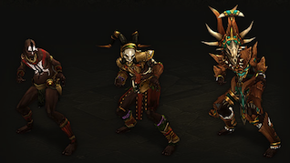

巫医
巫医是召唤亡灵和邪恶生物来为他们而战的灵魂战士。他们的身边满是僵尸和毒虫，巫医可以随意使用会爆炸的颅骨，流淌酸毒的云雾和可怕的诅咒来攻击他们的敌人。
受能力的影响，让敌人在被控制中痛苦而缓慢地死去是巫医的拿手好戏。他们可以得心应手地对敌人进行攻击或者诅咒减速，以及群体控制，并用自己饥饿的宠物们将敌人吞噬尽矣。巫医可以在战场上点燃火焰或者放毒，缓慢地吞噬靠近的敌人的生命。
虽然有些巫医会避免近战以强化他们的宠物和避免敌人近身，他们也有和敌人直接交火的战斗能力。
关键特性
-
宠物巫医周围有成千上万的奇怪生物 - 亚种生物，僵尸，蝙蝠，傀儡人和蜘蛛等等。很多生物都会在它们的主人身边徘徊，直到死亡为止。
-
毁灭魔法巫医可以召唤毁灭性的魔法来群体伤害的毒云，一团满是蝙蝠的火焰和蝗虫群。甚至还能牺牲宠物的身体，产生爆炸的碎片来攻击敌人。 -
诅咒与妖术削弱和减速敌人的妖术可以帮助削弱那些燃烧地狱的爪牙们。巫医有一大堆诅咒的能力，包括下毒和盗取生命的灵魂箭等。 -
战场控制所有和巫医战斗过的人身体和精神都发生了扭曲，限制了他们在战斗中的能力。来自无形之地的鬼魂触碰了敌人的身体之后会把他们变成小鸡，甚至让他们在精神的打击中落荒而逃。
能量源：法力

巫医天生就和无形之地有了联系，允许他们从灵魂之井中获得能量，那个能量被叫做法力。
法力是大量而缓慢再生的资源，巫医必须选择是攻击法术还是要数来确保他们不会让自己面对敌人时不会无还手之力。
由于法力回复速度很慢，巫医需要地依靠半永久型召唤物来增加效率，比如召唤的僵尸犬或者恐怖的巨像，同时还能给巫医提供一定保护而不会消耗更多。
巫医的法力池是可以扩展容量的，当需要的时候可以施放大量的毁灭性的力量并在短时间地分割战场局势。
特色装备
巫医可以使用多种武器，他们也有数种特色武器。魔法蛊是副手装备的法宝；除了直接作为武器使用之外，它们可以协助巫医避免错误的黑暗力量…… 并呼唤正确的力量。巫医同样也带着附魔过的仪式匕首。和普通的小刀不同，这些匕首是为活人献祭而专门设计的，所以非常符合它们终结生命的含义。

装备变化

职业纹章